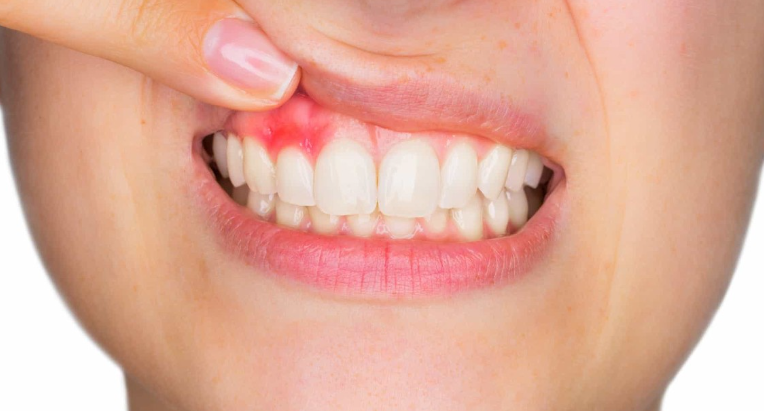
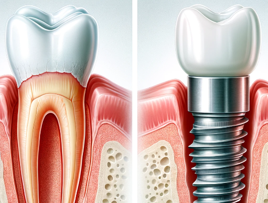

Síntomas
Los implantes dentales no presentan síntomas propiamente dichos, ya que son una solución para la pérdida de dientes. Sin embargo, después de la colocación de un implante, pueden aparecer síntomas temporales como:
Dolor o incomodidad en el sitio del implante.

Hinchazón de las encías.

Sangrado leve después de la cirugía.
Causas
Los implantes se utilizan para reemplazar dientes que se han perdido por:
01
Enfermedad periodontal avanzada.
02
Traumatismos dentales.
04
Pérdida de dientes por envejecimiento o desgaste.